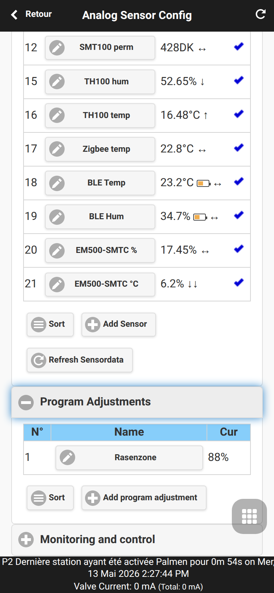
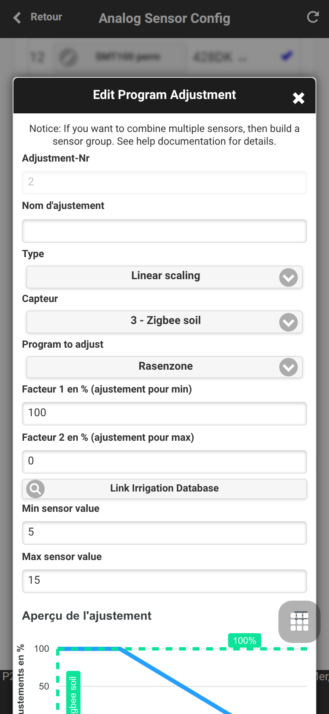
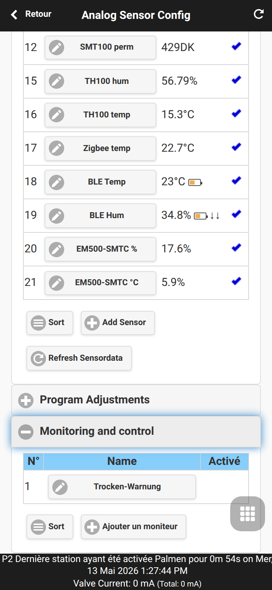
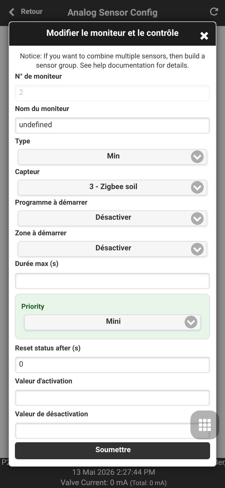

Automatisation capteurs et monitors
OpenSprinklerPro combine capteurs, ajustements de programme et monitors. Le flux UI complet est décrit dans Configuration des capteurs analogiques; cette page se concentre sur le modèle d’automatisation et les outils MCP/API configure_adjustment et configure_monitor.
Ajustements de programme
Les ajustements modulent la durée d’arrosage selon des valeurs capteur.
| Type | Comportement |
|---|---|
LINEAR |
Mapper min/max capteur vers facteur 1/facteur 2 |
DIGITAL_MIN |
Facteur 1 si la valeur est inférieure/égale au minimum |
DIGITAL_MAX |
Facteur 2 si la valeur est supérieure/égale au maximum |
DIGITAL_MINMAX |
Déclenchement hors fenêtre min/max |


Monitors
Les monitors surveillent des valeurs capteur ou des conditions logiques et créent des avertissements ou déclencheurs locaux.

